ストーリー

高校生のアサヒ、ヨウ、ヒカリは学校内でも指折りの問題児
今日も3人で補習授業を受けた帰り、ヨウが怪しい噂の話を始める
「夢の中でも会える方法があるらしいぜ、みんなで同じ夢をみれるんだって!」
面白そうな話に興味津々の二人に手を引かれ、
半信半疑のアサヒも噂の 検証に付き合うことに...
しかしアサヒは噂が本当だったことで
舞い上がったヨウ とヒカリとはぐれてしまう。
途方に暮れていたアサヒに一人の男が声を掛ける。
男はシノノメと名乗り自らを『夢の世界』の案内人だと称した。
同時刻、ヨウとヒカリはMr.Dreamerを名乗る怪しげな男と出会うことになる...

脚本家より
あなたは一生目を覚まさない代わりに
都合のいい明晰夢を見続けることが出来るとしたら
その提 案に乗るでしょうか？
逃げたくなるような辛い現実や忘れたい過去は
誰にだってあると思います。
そういった現実にどう 向き合っていくのか、
はたして自分はどうしたいのか、
登場人物たちと一緒に考えながら鑑賞いただけると幸いです。
主人公より
アサヒ
かみんぐすーん